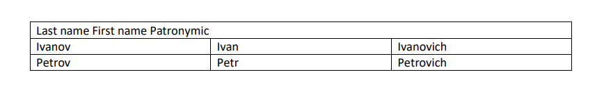

Creating Dedoc Document from basic data structures in code
Let’s dig inside Dedoc data structures and build Dedoc document from scratch. During this tutorial you will learn:
How to use data structures of Dedoc to store text, structure, tables, annotations, metadata, attachments
What is inside the Dedoc unified output representation of document
How document structure is defined
Raw document content is stored in UnstructuredDocument. This is de facto
a container with data structures objects:
list of
Tablelist of text lines
LineWithMetalist of attachments
AttachedFiledict with metadata
Order of data structures in lists doesn’t matter. All document hierarchy and structure can be held inside the data structures,
but UnstructuredDocument don’t provide any structure as is.
LineWithMeta
Basic block of Dedoc document is LineWithMeta (line with metadata):
text = "Simple text line"
simple_line = LineWithMeta(text)
Each document contains a hierarchy of its elements. For example, a header line should be on level higher than common
paragraph lines. Hierarchy level is produced by dedoc.structure_extractors and may vary depending on the type
of document. To specify hierarchy in our handmade document use HierarchyLevel class:
hierarchy_level = HierarchyLevel(level_1=0, level_2=0, line_type="header", can_be_multiline=True)
Hierarchy level compares by tuple (level_1, level_2): lesser values are closer to the root of the tree.
level_1 is primary hierarchy dimension that defines type of line:
root is
level_1= 0header is
level_1= 1
etc.
level_2 is a dimension through lines of equal type such as nested lists:
1. is
level_2= 11.1 is
level_2= 22.6 is
level_2= 23.4.5.1 is
level_2= 4
Some parts of the document (for example title) may take more than one line. To union them set can_be_multiline
to True and then copy level_1, level_2 and line_type from the first line to others.
Look to the hierarchy level description to get more details.
Define metadata with LineMetadata:
metadata = LineMetadata(page_id=0, line_id=1, tag_hierarchy_level=None, hierarchy_level=hierarchy_level)
Also there is an option to add some Annotations of the text lines:
annotations = [LinkedTextAnnotation(start=0, end=5, value="Now the line isn't so simple :)"), BoldAnnotation(start=7, end=10, value="True")]
Now you can create new LineWithMeta with hierarchy level, metadata and annotations:
super_line = LineWithMeta(text, metadata=metadata, annotations=annotations)
A few words about tag_hierarchy_level parameter: some readers extract information about hierarchy
directly from tags in document. For example, DOCX format provide tags for structure, formatting, headers and
footers, metadata and other. Dedoc store this information as HierarchyLevel object
at tag_hierarchy_level property of LineMetadata. List of readers that
create tag_hierarchy_level:
Table
Imagine you have table like this:
table_cells = [
["N", "Second name", "Name", "Organization", "Phone", "Notes"],
["1", "Ivanov", "Ivan", "ISP RAS", "8-800"],
]
Main block of tables is CellWithMeta. To create table, you should
make list of lists of CellWithMeta.
cells_with_meta = []
for row in table_cells:
cells_row = []
for cell_text in row:
line_with_meta = LineWithMeta(cell_text, metadata=LineMetadata(page_id=0, line_id=None), annotations=[])
cell = CellWithMeta(lines=[line_with_meta]) # CellWithMeta contains list of LineWithMeta
cells_row.append(cell)
cells_with_meta.append(cells_row)
Table also has some metadata, let’s assume that our table is on the first page.
Use TableMetadata:
table_metadata = TableMetadata(page_id=0, uid="table")
Finally, create Table:
table = Table(cells=cells_with_meta, metadata=table_metadata)
To place table to the specific place in hierarchy create LineWithMeta
with TableAnnotation:
table_line_metadata = LineMetadata(
page_id=0,
line_id=None,
hierarchy_level=HierarchyLevel(
level_1=1,
level_2=0,
can_be_multiline=False,
line_type="raw_text"
),
)
table_line_text = "Line with simple table"
table_line = LineWithMeta(table_line_text, metadata=table_line_metadata,
annotations=[TableAnnotation(value=table.metadata.uid, start=0, end=len(table_line_text))])
Let’s try to construct more complicated table such this one:
{kind=link}

First step is almost the same as for previous table:
table_cells = [
["Last name First name Patronymic", "Last name First name Patronymic", "Last name First name Patronymic"],
["Ivanov", "Ivan", "Ivanovich"],
["Petrov", "Petr", "Petrovich"]
]
for row in table_cells:
cells_row = []
for cell_text in row:
line_with_meta = LineWithMeta(cell_text, metadata=LineMetadata(page_id=0, line_id=None), annotations=[])
cell = CellWithMeta(lines=[line_with_meta]) # CellWithMeta contains list of LineWithMeta
cells_row.append(cell)
cells_with_meta.append(cells_row)
Then change colspan parameter of the first cell of first row to 3 like in HTML format.
Set invisible to True on the other two cells of the row:
cells_with_meta[0][0].colspan = 3
cells_with_meta[0][1].invisible = True
cells_with_meta[0][2].invisible = True
Table is well done!
table_metadata = TableMetadata(page_id=0, uid="complicated_table")
complicated_table = Table(cells=cells_with_meta, metadata=table_metadata)
Add to LineWithMeta:
complicated_table_line_metadata = LineMetadata(
page_id=0,
line_id=None,
hierarchy_level=HierarchyLevel(
level_1=1,
level_2=0,
can_be_multiline=False,
line_type="raw_text"
),
)
complicated_table_line_text = "complicated table line"
complicated_table_line = LineWithMeta(complicated_table_line_text, metadata=table_line_metadata,
annotations=[TableAnnotation(value=complicated_table.metadata.uid, start=0, end=len(complicated_table_line_text))])
AttachedFile
Also we can attach some files:
attached_file = AttachedFile(original_name="docx_example.png", tmp_file_path="test_dir/docx_example.png", need_content_analysis=False, uid="attached_file")
Following the example of tables:
attached_file_line_metadata = LineMetadata(
page_id=0,
line_id=None,
hierarchy_level=HierarchyLevel(
level_1=1,
level_2=0,
can_be_multiline=False,
line_type="raw_text"
),
)
attached_file_line_text = "Line with attached file"
attached_file_line = LineWithMeta(attached_file_line_text, metadata=attached_file_line_metadata,
annotations=[AttachAnnotation(attach_uid=attached_file.uid, start=0, end=len(attached_file_line_text))])
Unstructured Document
Now we are ready to create UnstructuredDocument object:
unstructured_document = UnstructuredDocument(
tables=[table, complicated_table],
lines=[super_line, table_line, complicated_table_line, attached_file_line],
attachments=[attached_file]
)
Parsed Document
There are several ways how the structure of document can be represented. In this tutorial
we will utilize TreeConstructor that
returns document tree from unstructured document. However, we should add some file
metadata to create tree representation. File metadata is usually extracted by Dedoc but because we are
building document from scratch we have to add it by ourselves.
unstructured_document.metadata = {
"file_name": "my_document.txt",
"temporary_file_name": "my_document.txt",
"file_type": "text/plain",
"size": 11111, # in bytes
"access_time": 1696381364,
"created_time": 1696316594,
"modified_time": 1696381364
}
structure_constructor = TreeConstructor()
parsed_document = structure_constructor.construct(document=unstructured_document)
Structure constructor returns ParsedDocument, which contains:
metadata –
DocumentMetadatacontent –
DocumentContentwithTreeNodeof root of the document and a list ofTable,attachments – list of
ParsedDocument(so attachments of attachments are stored recursively asParsedDocumentobjects)
To get the document tree as a dict:
parsed_document.to_api_schema().model_dump()
Great job! You just created from scratch your first document in Dedoc format!